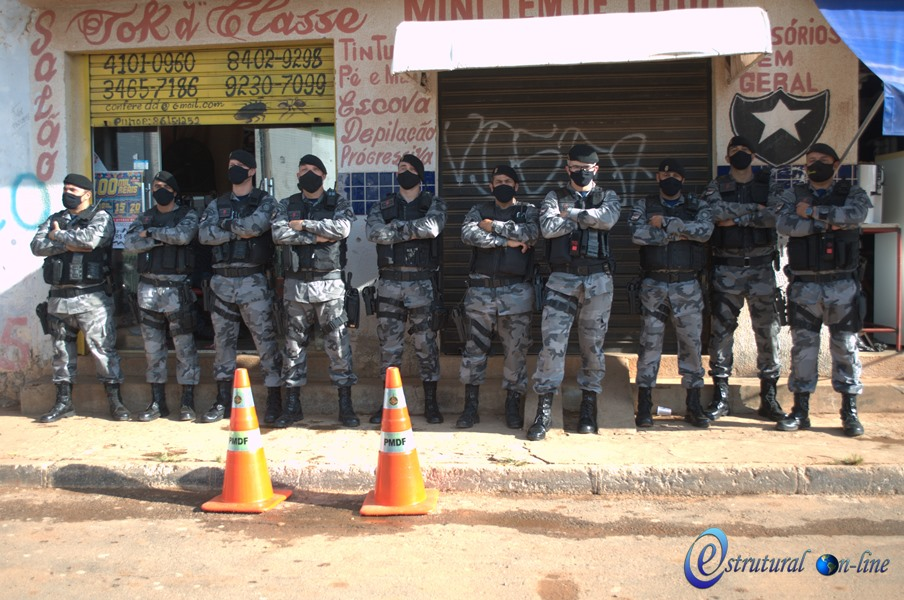
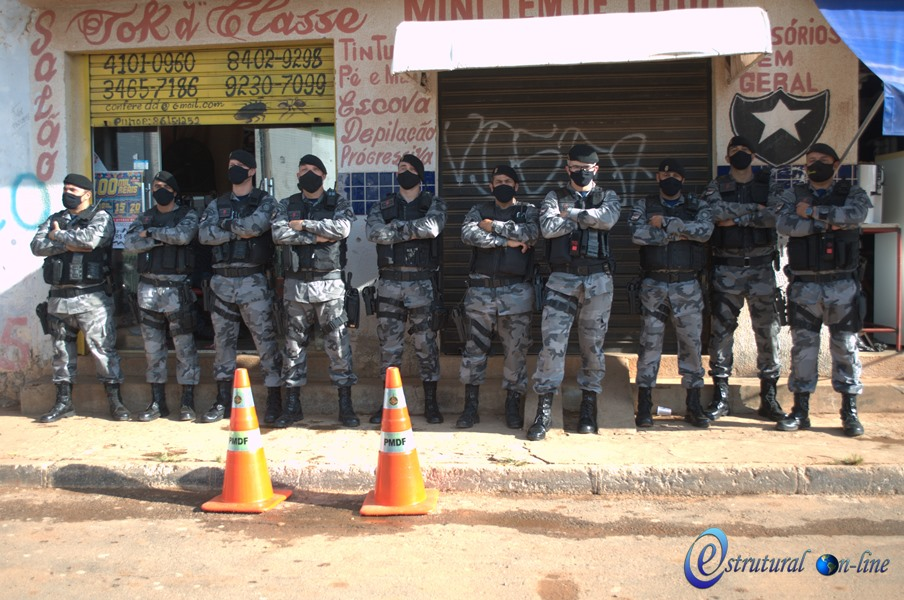

Noticias

.jpeg)
História da cidade Estrutural, no Distrito Federal: Uma jornada de superação e desenvolvimento
27 de setembro de 2024 – A cidade Estrutural, localizada na região administrativa do Distrito Federal, tem uma história marcada por lutas, desafios e superações. Com uma população estimada de cerca de 50 mil habitantes, Estrutural surgiu a partir de um conjunto de fatores históricos que refletem as transformações sociais e urbanísticas do Distrito Federal.
A origem da cidade remonta à década de 1960, quando Brasília, a nova capital do Brasil, foi planejada e construída. Durante a construção da cidade, trabalhadores de diversas partes do Brasil migraram para a capital em busca de emprego nas obras. A área onde hoje se encontra a Estrutural foi uma das regiões onde muitos desses trabalhadores se estabeleceram de forma improvisada. Sem infraestrutura adequada, surgiram as primeiras ocupações, inicialmente conhecidas como "favelas" ou "lixões", dada a proximidade de um antigo aterro sanitário. ...
Nos primeiros anos, a comunidade viveu em condições precárias, sem serviços básicos como água potável, saneamento e transporte público adequado. Contudo, ao longo das décadas, os moradores da Estrutural começaram a se organizar e a reivindicar melhores condições de vida. A luta por dignidade e direitos básicos tornou-se um marco na história da cidade.
Em 1989, a Estrutural foi oficialmente reconhecida como uma cidade e passou a ser administrada por uma região administrativa. A partir desse momento, o poder público começou a investir em infraestrutura e serviços essenciais, como escolas, postos de saúde e pavimentação de ruas. Apesar das dificuldades, a cidade foi se desenvolvendo lentamente, com a participação ativa dos moradores.
Nos anos 2000, a cidade passou a contar com mais investimentos em educação e segurança, além de ter se tornado um polo de comércio local, com o surgimento de pequenos negócios e feiras. Hoje, a Estrutural tem se consolidado como uma comunidade resiliente, com uma forte identidade e um grande senso de pertencimento por parte dos seus habitantes.
Além de sua luta histórica por melhores condições, a Estrutural também se destaca pela sua forte cultura popular. A cidade conta com eventos comunitários, festas tradicionais e projetos sociais que visam promover o bem-estar da população. O envolvimento dos moradores com o desenvolvimento local é um fator que tem impulsionado a cidade, apesar dos desafios históricos.
A história de Estrutural é um exemplo de superação. De um local marcado por dificuldades e abandono, a cidade tem se transformado com o esforço de seus cidadãos e de ações coletivas, representando a esperança de um futuro mais justo e próspero para todos os seus habitantes. Hoje, a Estrutural é um símbolo da força das comunidades periféricas no Brasil, que, mesmo diante de tantas adversidades, buscam conquistar um espaço digno dentro da sociedade.
A trajetória de Estrutural, com suas vitórias e desafios, continua a ser escrita todos os dias por seus moradores, que seguem lutando por um futuro melhor, com mais oportunidades e qualidade de vida.
Documentário Estrutural

Garoto de 12 anos ajuda o pai com entregas usando um drone
Estrutural, 14 de março de 2024 – Erick, um garoto de 12 anos, está ganhando destaque na sua comunidade por um feito inovador: ele está utilizando um drone para fazer as entregas do restaurante de seu pai, Fernando. A ideia surgerida pelo Erick, tem como objetivo pricipal, ajudarmidosos e pessoas com mobilidade reduzida, que não podem sair de casa para buscar suas refeições, e, com o apoio do pai, o garoto conseguiu transformar essa oportunidade em uma ação solidária que tem feito a diferença na vida de muitas pessoas.
O drone, que Erick ganhou após um concurso de ciências na escola, foi inicialmente pensado para o intreterimento e diversão para as crinças, porem, agora ajuda nas entregas rápidas do restaurante de Fernando, localizado no centro da cidade. No entanto, com o tempo, Erick percebeu que o uso da tecnologia poderia beneficiar ainda mais a comunidade. ...
"Eu achei que poderia usar o drone para facilitar a vida de quem não tem como sair, então, decidi fazer algo por elas", explicou Erick com um sorriso tímido.
O pai de Erick, ficou muito orgulhoso da iniciativa do filho. "Ele tem um grande coração, sempre querendo ajudar os outros. Quando ele sugeriu usar o drone para as entregas, eu fiquei surpreso, mas logo vi o quanto essa ideia poderia ser útil para as pessoas da nossa comunidade."
A ação tem sido um grande sucesso, e a cada dia mais pedidos são feitos para que o drone entregue as refeições diretamente nas casas de quem mais precisa. Os moradores da cidade, especialmente aqueles que enfrentam dificuldades para se locomover, estão emocionados com o gesto de Erick, que vai além da simples entrega de comida.
"É um alívio saber que alguém se importa e está disposto a fazer esse esforço extra para nos ajudar", disse Dona Maria, uma das beneficiadas pelas entregas de Erick.
O projeto tem chamado a atenção de outros empreendedores e educadores, que veem a ação de Erick como um exemplo de como a tecnologia pode ser usada para o bem social. Além disso, a iniciativa do garoto tem inspirado outros jovens a pensar em formas criativas de contribuir para a sua comunidade.
Com o apoio de seu pai e da escola, Erick promete continuar a inovar e a fazer a diferença, provando que, mesmo com 12 anos, já é possível transformar ideias simples em grandes ações.


Nova empresa inaugura na cidade Estrutural e promete impulsionar a economia local
11 de setembro de 2024 – A cidade Estrutural, no Distrito Federal, acaba de receber uma importante novidade para o seu cenário econômico. Foi inaugurada nesta semana a ConstruCasa, uma Eempresa voltada para a venda de produtos de construção e serviços de consultoria em reformas e reparos. A abertura da nova empresa representa um marco no crescimento e desenvolvimento da região, que vem buscando diversificar suas atividades econômicas e gerar novas oportunidades para seus moradores.
A ConstruCasa foi fundada por um grupo de empreendedores locais que, após identificar a necessidade crescente de materiais e serviços especializados na área de construção, decidiram criar uma empresa que atendesse à demanda da própria comunidade. O negócio promete não apenas oferecer produtos acessíveis, mas também proporcionar orientação técnica para aqueles que buscam melhorar suas casas ou realizar pequenas reformas. ...
"Vimos uma grande oportunidade aqui. A Estrutural tem crescido muito nos últimos anos e as pessoas precisam de apoio para transformar suas casas. Além disso, queremos criar um ambiente de trabalho local, com empregos diretos e indiretos para os moradores", afirmou Lucas Silva, um dos sócios da empresa.
A inauguração contou com a presença de diversos moradores da cidade, que comemoraram a chegada da nova empresa. Além de produtos de qualidade para construção e reforma, a ConstruCasa também oferecerá cursos e workshops gratuitos sobre manutenção de residências, ajudando os moradores a aprenderem mais sobre os cuidados com suas casas.
A chegada da nova empresa é vista como um avanço para a cidade da Estrutural, que, embora enfrente desafios históricos, tem mostrado grande potencial de crescimento. De acordo com a administração local, esse tipo de investimento é essencial para a criação de empregos e para o fortalecimento da economia da região, que ainda busca superar as limitações que marcaram seu passado.
"Estamos muito felizes com a abertura de novas empresas na cidade. Isso traz uma nova perspectiva para os moradores e mostra que, com esforço e colaboração, podemos transformar a nossa realidade", disse Rosana Alves, moradora da Estrutural e empresária local.
Além de impulsionar a economia, a nova empresa também tem como objetivo incentivar a criação de outros negócios e fomentar o empreendedorismo entre os jovens da cidade. Para isso, a ConstruCasa está oferecendo programas de capacitação e apoio a microempreendedores.
A expectativa é que a abertura de mais empresas, como essa, contribua para o desenvolvimento social e econômico da cidade, gerando mais emprego, melhorando a qualidade de vida dos moradores e ajudando a consolidar a Estrutural como um polo de negócios promissor dentro do Distrito Federal.
 


Iniciativas buscam aprimorar a segurança na cidade Estrutural com apoio da comunidade e tecnologia
01 de dezembro de 2024 – A segurança na cidade Estrutural, no Distrito Federal, tem sido uma preocupação crescente para os moradores e autoridades locais. Com o objetivo de promover mais tranquilidade e proteção para a população, novas iniciativas têm sido implementadas para aprimorar a segurança na região, combinando esforços da comunidade, poder público e tecnologia.
Uma das principais medidas foi a instalação de câmeras de monitoramento em pontos estratégicos da cidade. Em parceria com a Polícia Militar e a Secretaria de Segurança Pública do Distrito Federal, a Prefeitura da Estrutural iniciou o projeto "Cidade Segura", que prevê a colocação de câmeras de alta definição nas áreas de maior movimento, como praças, ruas comerciais e locais de acesso à cidade. A instalação das câmeras tem como objetivo não só inibir a criminalidade, mas também facilitar o trabalho das autoridades em casos de incidentes. ...
"Estamos investindo em tecnologias para garantir que a nossa comunidade se sinta mais segura. As câmeras são um dos primeiros passos de um plano maior que envolve o aumento da presença policial e o fortalecimento das ações de prevenção à violência", afirmou José Carlos Almeida, secretário de Segurança da Estrutural.
Além do monitoramento eletrônico, a Prefeitura tem incentivado a criação de grupos de segurança comunitária, nos quais os próprios moradores se organizam para ajudar a identificar comportamentos suspeitos e colaborar com as autoridades. Esses grupos, que atuam de forma preventiva, são formados por voluntários que têm a missão de fortalecer o vínculo entre a comunidade e a polícia, criando uma rede de apoio local.
"A segurança começa com a gente. Quando nos unimos e ficamos atentos, conseguimos ajudar a manter nossa cidade mais tranquila. O apoio da comunidade é fundamental para que a polícia possa agir com mais eficácia", comentou Renata Souza, coordenadora de um dos grupos de segurança comunitária da Estrutural.
A instalação de iluminação pública de LED, que já está sendo realizada em várias ruas da cidade, também é uma das ações adotadas para aumentar a sensação de segurança durante a noite. As ruas mais iluminadas diminuem os espaços propícios para atividades criminosas e oferecem mais conforto e bem-estar aos moradores.
Em paralelo, o programa "Segurança Jovem" foi lançado para envolver os jovens da cidade em atividades educativas e esportivas, afastando-os da criminalidade e criando alternativas saudáveis de lazer e aprendizado. O programa conta com o apoio de ONGs e voluntários que trabalham com adolescentes e jovens adultos, oferecendo oficinas de capacitação, além de programas de inclusão social e cidadania.
A população da Estrutural tem reagido positivamente a essas ações. "Estamos vendo uma mudança. A presença das câmeras e o apoio das autoridades fazem com que a gente se sinta mais tranquilo. A participação de todos é importante para que nossa cidade seja cada vez mais segura", afirmou Marcos Silva, morador da cidade há mais de 15 anos.
A expectativa é que, com a implementação dessas iniciativas, a segurança na Estrutural seja gradualmente aprimorada, criando um ambiente mais seguro e acolhedor para todos os moradores. O trabalho conjunto entre a comunidade, as autoridades e a tecnologia tem se mostrado uma alternativa eficaz para a redução da violência e o fortalecimento do espírito de coletividade na região.